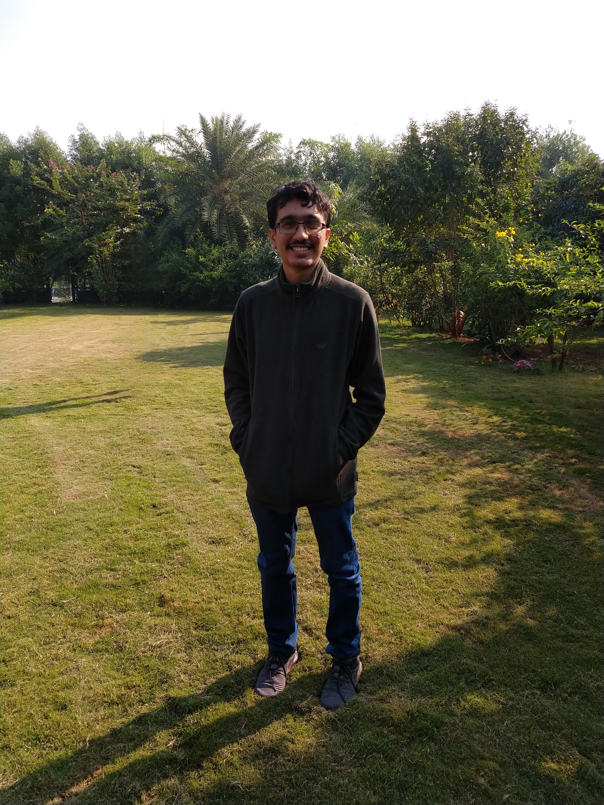

Who I am, Where I come from, and What I do!

I am a PhD student in Physics at the Università degli Studi di Torino (UniTo), working under the supervision of Marco Regis. I completed my Master's degree in Astrophysics from LMU, Munich with Daniel Gruen as my thesis supervisor, and my Bachelor's degree in Physics from Pandit Deendayal Energy University (PDEU) in Gandhinagar, India. I am originally from Surat, an Indian city known for its prolific diamond and textile businesses.
My research involves telling the story of the Universe by looking at its visible and invisible matter and light components, and answering the fundamental questions that could enhance or change the way we think about the Universe: How do we glean the true nature of dark matter? What are the objects contributing to unresolved backgrounds of light at different wavelengths, and how can we separate them? Specifically, how do we reliably use cross-correlations between gravitational tracers of large scale structure and the unresolved backgrounds from various electromagnetic wavelengths to separate its dark and astrophysical components? Below you can find my current attempts at figuring out exactly this, with a description of how far along the project has come.
A journey that aims to probe our Universe traverses a path that entails the development of certain skills and techniques along with an understanding of the physical world that has been collected so far, famously known as standing on the shoulders of giants. You can find a timeline of the same through my CV here, augmented by the links provided in the Contacts section.
Current Projects- A Progression Overview
- Cross-Correlations between the Unresolved Gamma-Ray Background and Tangential Shear from Photometric Surveys
- Applying Machine Learning Algorithms to Better Understand the Overdensities in the Radio Background
- Devising Theoretical Solutions to Understand the Behaviour of Precision Matrices Computed Through Precision Matrix Expansion